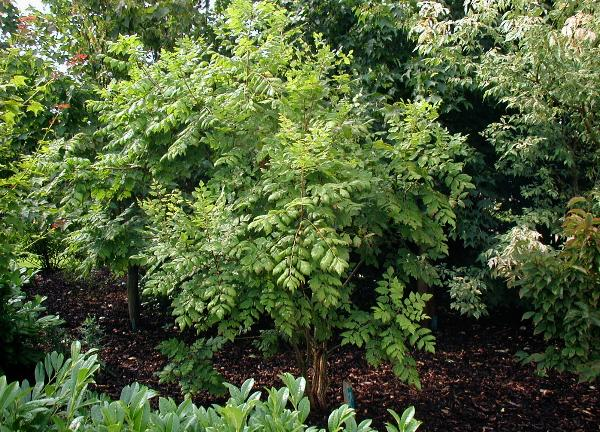

Koelreuteria — Golden Rain Tree (Koelreuteria)
A flashy showboat who rains golden flowers on the battlefield and quietly seeds the entire map while everyone is distracted by the spectacle.
Combat flavor
Fast growth and prolific seeding make Koelreuteria a rapid-deployment support unit that floods adjacent tiles — but brittle wood means it shatters under concentrated fire. Its invasive seeding could manifest as a passive that plants saplings in empty lane slots.
Real-world facts
Typical / max height7–12 m typical; up to ~15 m
Lifespan~50 years
Wood~620 kg/m³ air-dry density — moderate density but notably brittle; susceptible to storm damage
Growth speedfast (reaches 3–4 m in 5–7 years)
Ecology / notable traitsInvasive in parts of eastern USA — self-seeds prolifically and outcompetes natives; drought- and heat-tolerant; thrives in poor, alkaline urban soils; bee-pollinated; papery lantern seed pods disperse widely; not nitrogen-fixing; no thorns; pollution-tolerant urban survivor
Gallery
